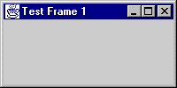

QUESTION 4:

What do you suppose this line from the program does?
JFrame frame = new JFrame("Test Frame 1");
The program is an application.
It is not called by a Web browser.
It has a main() which is where it starts running.
Even though it does not do much,
you should run this program and play with it
(one GUI is worth a thousand words).
But first (especially for Windows 95) close any important programs
you might have running (or at least save the game).
You are about to hit control-c,
and this can be dangerous.
To run the program,
do this:
first, copy-paste-save the program to a file called
TestFrame1.java.
Then:
C:\> javac TestFrame1.java
C:\> java TestFrame1
program runs and displays the frame

When the program runs, it displays a frame like the one shown. If you click on the usual "close button" of the frame, (the small "X" inside a square) the picture will vanish, but the program keeps running. To stop the program, type control-c in the DOS window. (You do this by clicking in the DOS window to be sure that it has focus, then holding down the "Ctrl" key while typing a "c" character.)
C:\> javac TestFrame1.java C:\> java TestFrame1 (control-c) C:\>
While the program is running, you can click on the frame and drag it
around, you can minimize it, you can grab a border and resize it, and so on.
All of this is built into the JFrame class (inherited from its ancestors).
All you have to do is ask for a JFrame object in your program and you get
all this.
What do you suppose this line from the program does?
JFrame frame = new JFrame("Test Frame 1");